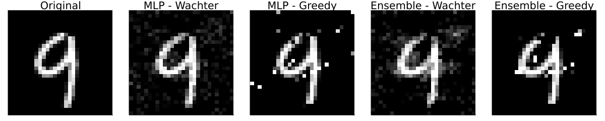

This post introduces `CounterfactualExplanations.jl`(https://www.paltmeyer.com/CounterfactualExplanations.jl/stable/): a new Julia package for generating counterfactual explanations. The package can be used to explain machine learning algorithms developed and trained in other popular programming languages like Python and R
Counterfactual explanations, which I introduced in one of my previous posts1, offer a simple and intuitive way to explain black-box models without opening them. Still, as of today there exists only one open-source library that provides a unifying approach to generate and benchmark counterfactual explanations for models built and trained in Python (Pawelczyk et al. 2021). This is great, but of limited use to users of other programming languages 🥲.
Enter CounterfactualExplanations.jl: a Julia package that can be used to explain machine learning algorithms developed and trained in Julia, Python and R. Counterfactual explanations fall into the broader category of explainable artificial intelligence (XAI). Explainable AI typically involves models that are not inherently interpretable, but require additional tools to be explainable to humans. Examples of the latter include ensembles, support vector machines and deep neural networks. This is not to be confused with interpretable AI, which involves models that are inherently interpretable and transparent such as general additive models (GAM), decision trees and rule-based models. Some would argue that we best avoid the black-box models altogether (Rudin 2019) and instead focus solely on interpretable AI. While I agree that initial efforts should always be geared towards interpretable models, avoiding black boxes altogether would entail missed opportunities and anyway is probably not very realistic in times of DALL\(\cdot\)E and Co.
Even though […] interpretability is of great importance and should be pursued, explanations can, in principle, be offered without opening the “black box.”
This post introduces the main functionality of the new Julia package. Following a motivating example using a model trained in Julia, we will see how easy the package can be adapted to work with models trained in Python and R. Since the motivation for this post is also to hopefully attract contributors, the final section outlines some of the exciting developments we have planned for the future.
Counterfactual Explanations for MNIST data
To introduce counterfactual explanations in my previous post I used a simple binary classification problem involving a linear classifier and a linearly separable, synthetic data set with just two features. This time we are going to step it up a notch: we will generate counterfactual explanations MNIST data. The MNIST dataset contains 60,000 training samples of handwritten digits in the form of 28x28 pixel grey-scale images (LeCun 1998). Each image is associated with a label indicating the digit (0-9) that the image represents. The CounterfactualExplanations.jl package ships with two black-box models that were trained to predict labels for this data: firstly, a simple multi-layer perceptron (MLP) and, secondly, a corresponding deep ensemble. Originally proposed by Lakshminarayanan, Pritzel, and Blundell (2016), deep ensembles are really just ensembles of deep neural networks. They are still among the most popular approaches to Bayesian deep learning.2
Black-box Models
The code below loads relevant packages along with the MNIST data and pre-trained models.
While the package can currently handle a few simple classification models natively, it is designed to be easily extensible through users and contributors. Extending the package to deal with custom models typically involves only two simple steps:
Subtyping: the custom model needs to be declared as a subtype of the package-internal type AbstractFittedModel.
Multiple dispatch: the package-internal functions logits and probs need to be extended through custom methods for the new model type.
The following code implements these two steps first for the MLP and then for the deep ensemble.
Show the code
# MLP:# Step 1)struct NeuralNetwork <: Models.AbstractFittedModel model::Anyend# Step 2)logits(M::NeuralNetwork, X::AbstractArray) = M.model(X)probs(M::NeuralNetwork, X::AbstractArray)=softmax(logits(M, X))M =NeuralNetwork(model)# Deep ensemble:usingFlux: stack# Step 1)struct FittedEnsemble <: Models.AbstractFittedModel ensemble::AbstractArrayend# Step 2)usingStatisticslogits(M::FittedEnsemble, X::AbstractArray) =mean(stack([m(X) for m in M.ensemble],3),dims=3)probs(M::FittedEnsemble, X::AbstractArray) =mean(stack([softmax(m(X)) for m in M.ensemble],3),dims=3)M_ensemble =FittedEnsemble(ensemble)
Counterfactual Generators
Next we need to specify the counterfactual generators we want to use. The package currently ships with two default generators that both need gradient access: firstly, the generic generator introduced by Wachter, Mittelstadt, and Russell (2017) and, secondly, a greedy generator introduced by Schut et al. (2021). The greedy generator is desiged to be used with models that incorporate uncertainty in their predictions such as the deep ensemble introduced above. It is greedy in the sense that it does not rely on a complexity penalty that is typically used in this context to ensure that counterfactual explanations are realistic and unambiguous among other desirable characteristics. It works for probabilistic (Bayesian) models, because they only produce high-confidence predictions in regions of the feature domain that are actually populated by training samples. As long as the model is expressive enough and well-specified, counterfactuals in these regions will always be realistic and unambiguous since by construction they should look very similar to training samples. Other popular approaches to counterfactual explanations like REVISE (Joshi et al. 2019) and CLUE (Antorán et al. 2020) also play with this simple idea. The following code instantiates the two generators for the problem at hand.
Once the model and counterfactual generator are specified, actually running counterfactual search is very easy using the package. For a given factual (x), target class (target) and data set (counterfactual_data), simply running
generate_counterfactual(x, target, counterfactual_data, M, generic)
will generate the results, in this case using the generic generator (generic) for the MLP (M). Since we have specified two different black-box models and two different counterfactual generators, we have four combinations of a model and a generator in total. For each of these combinations I have used the generate_counterfactual function to produce the results in Figure 1.
In every case the desired label switch is in fact achieved, but arguably from a human perspective only the counterfactuals for the deep ensemble look like a four. The generic generator produces mild perturbations in regions that seem irrelevant from a human perspective, but nonetheless yields a counterfactual that can pass as a four. The greedy approach clearly targets pixels at the top of the handwritten nine and yields the best result overall. For the non-bayesian MLP, both the generic and the greedy approach generate counterfactuals that look much like adversarial examples: they perturb pixels in seemingly random regions on the image.

Figure 1: Counterfactual explanations for MNIST: turning a nine (9) into a four (4).
Language interoperability
Contribute
The ambition for CounterfactualExplanations.jl is to provide a go-to place for counterfactual explanations in Julia. To this end, the following is a non-exhaustive list of exciting feature developments we envision:
Additional counterfactual generators and predictive models.
Additional datasets for testing, evaluation and benchmarking.
Improved preprocessing including native support for categorical features.
Support for regression models.
The package is designed to be extensible, which should facilitate contributions through the community.
Wrapping up
Antorán, Javier, Umang Bhatt, Tameem Adel, Adrian Weller, and José Miguel Hernández-Lobato. 2020. “Getting a Clue: A Method for Explaining Uncertainty Estimates.”arXiv Preprint arXiv:2006.06848.
Joshi, Shalmali, Oluwasanmi Koyejo, Warut Vijitbenjaronk, Been Kim, and Joydeep Ghosh. 2019. “Towards Realistic Individual Recourse and Actionable Explanations in Black-Box Decision Making Systems.”arXiv Preprint arXiv:1907.09615.
Lakshminarayanan, Balaji, Alexander Pritzel, and Charles Blundell. 2016. “Simple and Scalable Predictive Uncertainty Estimation Using Deep Ensembles.”arXiv Preprint arXiv:1612.01474.
LeCun, Yann. 1998. “The MNIST Database of Handwritten Digits.”Http://Yann. Lecun. Com/Exdb/Mnist/.
Pawelczyk, Martin, Sascha Bielawski, Johannes van den Heuvel, Tobias Richter, and Gjergji Kasneci. 2021. “Carla: A Python Library to Benchmark Algorithmic Recourse and Counterfactual Explanation Algorithms.”arXiv Preprint arXiv:2108.00783.
Rudin, Cynthia. 2019. “Stop Explaining Black Box Machine Learning Models for High Stakes Decisions and Use Interpretable Models Instead.”Nature Machine Intelligence 1 (5): 206–15.
Schut, Lisa, Oscar Key, Rory Mc Grath, Luca Costabello, Bogdan Sacaleanu, Yarin Gal, et al. 2021. “Generating Interpretable Counterfactual Explanations by Implicit Minimisation of Epistemic and Aleatoric Uncertainties.” In International Conference on Artificial Intelligence and Statistics, 1756–64. PMLR.
Wachter, Sandra, Brent Mittelstadt, and Chris Russell. 2017. “Counterfactual Explanations Without Opening the Black Box: Automated Decisions and the GDPR.”Harv. JL & Tech. 31: 841.
For more information on Bayesian deep learning see my previous post: [TDS], [blog].↩︎
Citation
BibTeX citation:
@online{altmeyer2022,
author = {Patrick Altmeyer},
title = {Explain Any Model Through Counterfactuals},
date = {2022-04-20},
langid = {en}
}
For attribution, please cite this work as:
Patrick Altmeyer. 2022. “Explain Any Model Through
Counterfactuals.” April 20, 2022.
Source Code
---title: "Explain any model through counterfactuals"subtitle: "Through a new language-agnostic Julia package"date: '2022-04-20'description: | This post introduces `CounterfactualExplanations.jl`(https://www.paltmeyer.com/CounterfactualExplanations.jl/stable/): a new Julia package for generating counterfactual explanations. The package can be used to explain machine learning algorithms developed and trained in other popular programming languages like Python and Rcategories: - counterfactuals - explainable AI - Juliaimage: www/intro.gifexecute: eval: false echo: true---<divclass="intro-gif"><figure><imgsrc="www/intro.gif"><figcaption>Turning a 9 (nine) into a 4 (four).</figcaption></figure></div><!-- Intro -->Counterfactual explanations, which I introduced in one of my previous posts^[See: [[TDS](https://towardsdatascience.com/individual-recourse-for-black-box-models-5e9ed1e4b4cc)], [[blog](https://www.paltmeyer.com/blog/posts/individual-recourse-for-black-box-models/)]], offer a simple and intuitive way to explain black-box models without opening them. Still, as of today there exists only one open-source library that provides a unifying approach to generate and benchmark counterfactual explanations for models built and trained in Python [@pawelczyk2021carla]. This is great, but of limited use to users of other programming languages 🥲. Enter [`CounterfactualExplanations.jl`](https://www.paltmeyer.com/CounterfactualExplanations.jl/stable/): a Julia package that can be used to explain machine learning algorithms developed and trained in Julia, Python and R. Counterfactual explanations fall into the broader category of explainable artificial intelligence (XAI). Explainable AI typically involves models that are not inherently interpretable, but require additional tools to be explainable to humans. Examples of the latter include ensembles, support vector machines and deep neural networks. This is not to be confused with interpretable AI, which involves models that are inherently interpretable and transparent such as general additive models (GAM), decision trees and rule-based models. Some would argue that we best avoid the black-box models altogether [@rudin2019stop] and instead focus solely on interpretable AI. While I agree that initial efforts should always be geared towards interpretable models, avoiding black boxes altogether would entail missed opportunities and anyway is probably not very realistic in times of [DALL$\cdot$E](https://openai.com/blog/dall-e/) and Co.> Even though [...] interpretability is of great importance and should be pursued, explanations can, in principle, be offered without opening the “black box.”>> --- @wachter2017counterfactual<!-- Nut paragraph -->This post introduces the main functionality of the new Julia package. Following a motivating example using a model trained in Julia, we will see how easy the package can be adapted to work with models trained in Python and R. Since the motivation for this post is also to hopefully attract contributors, the final section outlines some of the exciting developments we have planned for the future. ## Counterfactual Explanations for MNIST dataTo introduce counterfactual explanations in my previous [post](https://towardsdatascience.com/individual-recourse-for-black-box-models-5e9ed1e4b4cc) I used a simple binary classification problem involving a linear classifier and a linearly separable, synthetic data set with just two features. This time we are going to step it up a notch: we will generate counterfactual explanations MNIST data. The MNIST dataset contains 60,000 training samples of handwritten digits in the form of 28x28 pixel grey-scale images [@lecun1998mnist]. Each image is associated with a label indicating the digit (0-9) that the image represents. The [`CounterfactualExplanations.jl`](https://www.paltmeyer.com/CounterfactualExplanations.jl/stable/) package ships with two black-box models that were trained to predict labels for this data: firstly, a simple multi-layer perceptron (MLP) and, secondly, a corresponding deep ensemble. Originally proposed by @lakshminarayanan2016simple, deep ensembles are really just ensembles of deep neural networks. They are still among the most popular approaches to Bayesian deep learning.^[For more information on Bayesian deep learning see my previous post: [[TDS](https://towardsdatascience.com/go-deep-but-also-go-bayesian-ab25efa6f7b)], [[blog](https://www.paltmeyer.com/blog/posts/effortsless-bayesian-dl/)].] ### Black-box ModelsThe code below loads relevant packages along with the MNIST data and pre-trained models. ```{julia}# Load package, models and data:using CounterfactualExplanations, Fluxusing CounterfactualExplanations.Data: mnist_data, mnist_model, mnist_ensembledata, X, ys = mnist_data()model = mnist_model()ensemble = mnist_ensemble()counterfactual_data = CounterfactualData(X,ys';domain=(0,1))```While the package can currently handle a few simple classification models natively, it is designed to be easily extensible through users and contributors. Extending the package to deal with custom models typically involves only two simple steps:1. **Subtyping**: the custom model needs to be declared as a subtype of the package-internal type `AbstractFittedModel`.2. **Multiple dispatch**: the package-internal functions `logits` and `probs` need to be extended through custom methods for the new model type.The following code implements these two steps first for the MLP and then for the deep ensemble.```{julia}# MLP:# Step 1)struct NeuralNetwork <: Models.AbstractFittedModel model::Anyend# Step 2)logits(M::NeuralNetwork, X::AbstractArray) = M.model(X)probs(M::NeuralNetwork, X::AbstractArray)= softmax(logits(M, X))M = NeuralNetwork(model)# Deep ensemble:using Flux: stack# Step 1)struct FittedEnsemble <: Models.AbstractFittedModel ensemble::AbstractArrayend# Step 2)using Statisticslogits(M::FittedEnsemble, X::AbstractArray) = mean(stack([m(X) for m in M.ensemble],3),dims=3)probs(M::FittedEnsemble, X::AbstractArray) = mean(stack([softmax(m(X)) for m in M.ensemble],3),dims=3)M_ensemble = FittedEnsemble(ensemble)```### Counterfactual GeneratorsNext we need to specify the counterfactual generators we want to use. The package currently ships with two default generators that both need gradient access: firstly, the generic generator introduced by @wachter2017counterfactual and, secondly, a greedy generator introduced by @schut2021generating. The greedy generator is desiged to be used with models that incorporate uncertainty in their predictions such as the deep ensemble introduced above. It is greedy in the sense that it does not rely on a complexity penalty that is typically used in this context to ensure that counterfactual explanations are realistic and unambiguous among other desirable characteristics. It works for probabilistic (Bayesian) models, because they only produce high-confidence predictions in regions of the feature domain that are actually populated by training samples. As long as the model is expressive enough and well-specified, counterfactuals in these regions will always be realistic and unambiguous since by construction they should look very similar to training samples. Other popular approaches to counterfactual explanations like REVISE [@joshi2019towards] and CLUE [@antoran2020getting] also play with this simple idea. The following code instantiates the two generators for the problem at hand. ```{julia}wachter = GenericGenerator(;loss=:logitcrossentropy)greedy = GreedyGenerator(;loss=:logitcrossentropy)```### Generating explanations```{julia}#| echo: false# Randomly selected factual:using RandomRandom.seed!(1234)x = Flux.unsqueeze(select_factual(counterfactual_data, rand(1:size(X)[2])),2)target = 5γ = 0.95```Once the model and counterfactual generator are specified, actually running counterfactual search is very easy using the package. For a given factual (`x`), target class (`target`) and data set (`counterfactual_data`), simply running ```{julia}#| code-fold: falsegenerate_counterfactual(x, target, counterfactual_data, M, generic)``` will generate the results, in this case using the generic generator (`generic`) for the MLP (`M`). Since we have specified two different black-box models and two different counterfactual generators, we have four combinations of a model and a generator in total. For each of these combinations I have used the `generate_counterfactual` function to produce the results in @fig-mnist-9to4. In every case the desired label switch is in fact achieved, but arguably from a human perspective only the counterfactuals for the deep ensemble look like a four. The generic generator produces mild perturbations in regions that seem irrelevant from a human perspective, but nonetheless yields a counterfactual that can pass as a four. The greedy approach clearly targets pixels at the top of the handwritten nine and yields the best result overall. For the non-bayesian MLP, both the generic and the greedy approach generate counterfactuals that look much like adversarial examples: they perturb pixels in seemingly random regions on the image.```{julia}#| echo: falsegenerators = Dict( "Wachter" => wachter, "Greedy" => greedy)models = Dict("MLP" => M, "Ensemble" => M_ensemble)# Plotting utilities:using Imagesusing MLDatasets.MNIST: convert2imageinput_dim = size(X)[1]using Flux: onecold# Specific image:function from_digit_to_digit(from::AbstractArray, to::Number, generator, model; γ=0.95, x=X, y=ys, seed=1234, T=1000) x = from target = to + 1 counterfactuals = Dict() for (k_gen,v_gen) ∈ generators for (k_mod,v_mod) ∈ models k = k_mod * " - " * k_gen counterfactuals[k] = generate_counterfactual(x, target, counterfactual_data, v_mod, v_gen; T=T) end end return counterfactualsend# Specific digit:function from_digit_to_digit(from::Number, to::Number, generator::Dict, model::Dict; γ=0.95, x=X, y=ys, seed=1234, T=1000) Random.seed!(seed) candidates = findall(onecold(y,0:9).==from) x = Flux.unsqueeze(x[:,rand(candidates)],2) target = to + 1 counterfactuals = Dict() for (k_gen,v_gen) ∈ generators for (k_mod,v_mod) ∈ models k = k_mod * " - " * k_gen counterfactuals[k] = generate_counterfactual(x, target, counterfactual_data, v_mod, v_gen; T=T) end end return counterfactualsend``````{julia}#| echo: falseto = 4counterfactuals = from_digit_to_digit(x,to,generators,models)plts = first(values(counterfactuals)).x |> x -> plot(convert2image(reshape(x,Int(√(input_dim)),Int(√(input_dim)))),title="Original")plts = vcat(plts, [plot(convert2image(reshape(v.x′,Int(√(input_dim)),Int(√(input_dim)))),title=k) for (k,v) in counterfactuals])plt = plot(plts...,layout=(1,length(plts)),axis=nothing, size=(1200,300))savefig(plt, joinpath(www_path, "mnist_9_to_4.png"))```{#fig-mnist-9to4}## Language interoperability## ContributeThe ambition for `CounterfactualExplanations.jl` is to provide a go-to place for counterfactual explanations in Julia. To this end, the following is a non-exhaustive list of exciting feature developments we envision:1. Additional counterfactual generators and predictive models.2. Additional datasets for testing, evaluation and benchmarking.3. Improved preprocessing including native support for categorical features.4. Support for regression models.5. The package is designed to be extensible, which should facilitate contributions through the community.## Wrapping up